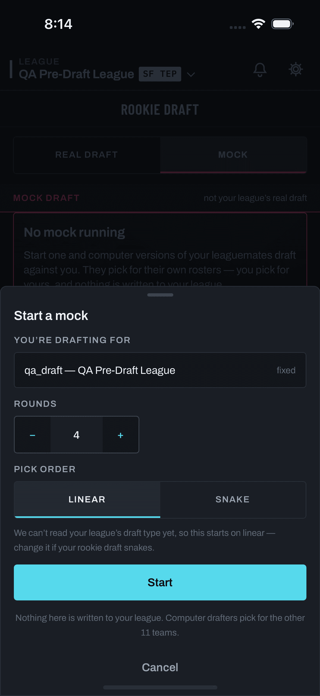

What this page shows. The mock-setup sheet gains a two-option segmented control — CPU vs manual —
below the Pick-order row, per LLD §1.6 / §3.2 (mock-setup.mode.cpu / mock-setup.mode.manual).
It reuses the shipped TypeSeg construction verbatim (ink-3 well + 2px ice underline on the active
segment — ice = action, no new colors). CPU is drawn as the default, per plan §10 Q2 (pending operator
confirmation; the build blocks on that answer only if it flips).
Copy is PRD-owned. Every string on the new control and the mode-dependent footnote is the LLD's placeholder, flagged PRD COPY on the frames. Everything else on the sheet is the shipped screen verbatim (capture left).

screens/mobile/mock-draft/setup-sheet.png, hermetic harness,
2026-08-11). Three controls: read-only team, rounds stepper, Linear|Snake. No mode control exists.TypeSeg reused verbatim, CPU active
by default. The shipped CPU footnote is unchanged in this state. Segment labels are the LLD's placeholders
(“Computer picks other teams” / “You pick for every team”), wrapped to two lines at the 11px label size —
if the PRD's final copy runs longer, shorten the segment labels and move the explanation into the field hint.TypeSeg segments, 44px touch floor. Nothing new to learn; the sheet
stays a confirmation, not an interrogation.